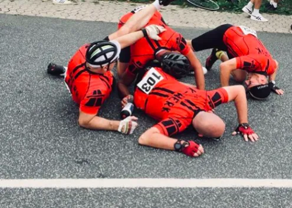

11. etape: Molteni vinder 100 km holdløb

Den klassiske disciplin 100 km holdløb blev genindført ved dette års Tour de Danmark – og ikke uventet vandt Squadra Molteni med mere end 17 minutter til nærmeste hold.
Det store spændende spørgsmål ved dette års Tour de Danmark var: Hvor mange minutter ville Squadra Molteni vinde holdløbet med? Ville Team Peugeot Re-Cycled få defekt – og hvor mange? Ville Team K-Werk undgå at styrte? – og ville Thomas Marker, Team Brooklyn lave en DNS?
Squadra Molteni valgte at sætte Kaptajn Bjørnsteen, Løjtnant Sørensen, Grane Maaløe, Eigil Leegard og Per Sandahl på 100-km holdet. Alene på papiret en skræmmende opstilling – og i virkeligheden skulle den vise sig at være frygtindgydende.

Ja, jeg valgte at spille det sikre kort. “Det Orange Eksprestog” er jo forsvarende danmarksmestre – så de skulle have lov til at vise, hvad de er lavet af, fortæller sportsdirektør Klaus Maarup Kjærsgaard.
Som en varm kniv igennem blødt smør
Efter godt 50 km er det dog lige ved at gå galt for Det Orange Eksprestog: I en højrekurve træder pludselig en kvinde med gul regnfrakke og et stort papskilt frem – med ryggen til, og tydeligvis mest interesseret i, at komme i fjernsynet.
Det kunne have gået helt galt. Hvis vi havde kørt på corbonadecykler, så var hele holdet nok styrtet. Men heldigvis havde hverken papskilt, regnfrakke eller kvinde nogen effekt på Kaptajn Bjørnsteen og hans 10.5 kg tunge Eddy Merck stålracer. Både kaptajnen og stålcyklen skar sig gennem papskiltet, som en varm kniv igennem blødt smør, fortæller Klaus Maarup Kjærsgaard, der sad lige bag holdet i servicebilen, da det skete.
K-Werk styrter, Peugeot får defekt og Thomas Marker i spidsen for DNS-Klassement
Ikke uventet styrtede team K-Werk. Det skete allerede efter godt 10 km, hvor Jørgen, Jørgen, Jørn og Pelle er ved at diskutere, om de skal til højre eller venstre. Pelle mente, at de skulle til venstre ved den røde pil, der egentlig skulle have været blå, og som slet ikke var der… Resultatet blev et ret dramatisk styrt, hvor der heldigvis kun skete materiel skade.

Endnu mindre uventet fik Team Peugeot Re-Cycled defekt igen. Endnu engang var det Morten Mejsen, der knækkede kæden. Om det var før eller efter han havde snydt og skudt genvej, er juryen stadig ved at undersøge.


Og endnu engang viste Thomas Marker, at det ikke er tilfældigt, at han i særklasse er den bedste DNS-retro-rytter. Marker havde op til holdløbet foldet sig fuldt ud i indtil flere kommentarer om, at han ville stille med et stort Brooklyn-hold. Men selvfølgelig dukkede Thomas ikke op.
11. Etape:
1. Squadra Molteni
Klassement:
1. Jens Langergaard, Squadra Molteni
2. Eigil Leegaard, Squadra Molteni
3. Max ”Maxteni” Nielsen, Squadra Molteni
4. Per Sandahl, Squadra Molteni
5. Grane Maaløe, Squadra Molteni
6. Niels Bjørnsteen, Squadra Molteni
7. Løjtnant Sørensen, Squadra Molteni
Hold:
1. Squadra Molteni
2. Team K-Werk
DNS-Klassement:
Thomas Marker, Team Brooklyn